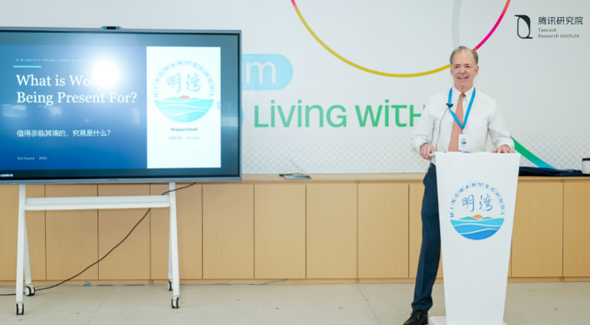

AI无法教会的三件事
AI无法教会的三件事
摘要
摘要：AI无法教会的三件事
作者：腾讯研究院 来源：腾讯研究院
一句话总结
（请用一句话概括全文主旨。提示：可结合下方"文章核心问题"与"主要观点"得出。）
文章核心问题
（作者试图回答的中心问题是什么？例如"在 X 条件下，Y 应当如何 Z"。请人工补充。）
主要观点
- 方泰德
（Ted Faunce） 博士，深圳明湾学校常务校长。
- 普林斯顿大学古法语博士，教育生涯近50年，横跨美国、秘鲁、法国、越南及中国。
- 2006年至2017年担任中国香港汉基国际学校校长，深受学生与家长信赖，学生称他为“头脑的大师”。
- 他也是“美丽中国”
（Teach for China） 理事会成员。
- 在中国生活近20年后，2024年受到陈一丹博士邀请，参与到深圳明湾学校的创校工作中，后续担任常务校长，致力于在AI时代重新定义"以人为本"的双语教育。
- 2026年5月27日，AI & Society Forum来到深圳明湾学校。
论证结构
文章的结构骨架（按小标题还原）：
（未检测到小标题；请人工补充）
关键概念
事实上、学校、值得在场的事、作为一所新学、腾讯研究院、在我看来、问题不是、的意义
背景补充
（作者写作时的时代/行业/学术背景，以及读者需要的前置知识。请人工补充。）
值得摘录的句子
- 方泰德
（Ted Faunce） 博士，深圳明湾学校常务校长。
- 普林斯顿大学古法语博士，教育生涯近50年，横跨美国、秘鲁、法国、越南及中国。
- 2006年至2017年担任中国香港汉基国际学校校长，深受学生与家长信赖，学生称他为“头脑的大师”。
- 他也是“美丽中国”
（Teach for China） 理事会成员。
- 在中国生活近20年后，2024年受到陈一丹博士邀请，参与到深圳明湾学校的创校工作中，后续担任常务校长，致力于在AI时代重新定义"以人为本"的双语教育。
- 2026年5月27日，AI & Society Forum来到深圳明湾学校。
与知识库已有条目的可能关联
（这篇和 KB 里已有的哪些条目主题相近、观点互补或对立？请人工或检索后补充。）
个人阅读提示：这篇文章为什么值得保存
（一句话说明你保存它的理由——是为了某个论点、某个案例、还是某种写法。请人工补充。）
附：首段原文（用于校对）
正文 / 中文原文
AI无法教会的三件事
作者：腾讯研究院
来源：腾讯研究院
发布日期：2026-06-26
原文链接：https://mp.weixin.qq.com/s/be9-vAYCkq_a_RkuZEpEiw

方泰德 （Ted Faunce） 博士，深圳明湾学校常务校长。普林斯顿大学古法语博士，教育生涯近50年，横跨美国、秘鲁、法国、越南及中国。2006年至2017年担任中国香港汉基国际学校校长，深受学生与家长信赖，学生称他为“头脑的大师”。他也是“美丽中国” （Teach for China） 理事会成员。在中国生活近20年后，2024年受到陈一丹博士邀请，参与到深圳明湾学校的创校工作中，后续担任常务校长，致力于在AI时代重新定义"以人为本"的双语教育。 2026年5月27日，AI & Society Forum来到深圳明湾学校。这所2025年9月迎来首批学生的年轻学校，积极开展AI教育实践，也在用自己的方法回答一个根本性的问题：当AI可以传递一切知识、生成一切答案，学校还剩下什么不可替代的价值？ 方泰德博士带来了一种令人意外的乐观，他给出了他近50年教育生涯沉淀下来的回答——AI无法取代学校的意义，它澄清了学校的意义。 他用了一个比喻——“30-70-90分挑战”——描述了AI时代学生面临的核心诱惑：当AI可以瞬间把一个30分的想法提升到70分，谁还愿意为那“不可替代的20分”继续挣扎？而教育者的使命，恰恰是帮助孩子找到、并坚守属于自己的那20分。 编辑整理： 窦淼磊 腾讯研究院高级研究员 以下为方泰德博士在论坛上的演讲全文。 大家下午好。这是一个非正式的场合，但我受邀来做这个主旨演讲。说实话，我不常收到这类邀请，所以我格外重视。主办方建议了一个演讲主题：“值得在场的事是什么？”我起初琢磨着要不要换一个，但转念一想：不，这确实是一个很有意义的主题。 拆解这个主题——“值得在场的事”——我发现它有几层含义。第一层是在此时此刻——也就是在这个特定的历史节点、在这个特定的地点。明湾是一所非常新的学校，去年九月才开学，开学至今不过八个月。在我看来，任何一所在2025、2026年新开办的学校，都有责任在理解AI与教育的基础上，来定义自己的实践和政策，并找到AI与人之间的关系。 我从事教育很长时间了——接近50年。但我从未见过任何事物能像AI这样，引发如此巨大的关注、兴奋和担忧。相信大家也有同感，这是一次范式转变。所以，这正是我们“值得在场”的第一个原因，就是我们在这个非凡的时代拥有了一席做教育的席位。 今天，我想和大家聊聊几件我们已经清楚理解的事情。 关于AI与教育的关系，外面的探讨实在太多了，甚至夹杂着过载的噪音。我想试着找出几件我们真正理解的事情。然后谈谈一些危险和挑战，最后回到明湾学校，谈谈我们正在做的事情。 首先，我想说明湾学校——虽然我们背后有一个大“T” （腾讯） ，学校的基因里有着得天独厚的科技背景和丰富的资源，但我们不是一所技术学校。事实上，如果你读一读墙上的价值观，你会发现，在陈一丹先生的启发下，我们是一所深深扎根于人的学校。 事实上，我有充分的理由说，技术已经无处不在。我甚至有一个目标——在学校所有的书面文件、所有的政策中，不使用“技术”这个词。为什么？因为技术早就在开源平台的推动下普及到了每个人身边，刻意强调它，反而显得有些多余。 作为一所新学校，我们就像花园里刚刚破土的幼苗，正陪伴着2到12岁的孩子们一同发芽成长。 互联网从根本上改变了人们获取信息的方式。现在， AI更是将“传递信息”这个功能从学校转移出去——不仅仅是信息的商品化，而是将“智力”本身商品化。 随着互联网的出现，学校的重心从知识转向了思考——从我们谈论知识和能量的方式，转向了批判性思维中的“思考”，以及在某种程度上转向了项目式学习中的“实践”。 所以 有了AI之后，大浪淘沙后留下来的，恰恰是学校最本质的东西——因为我们被迫更深入、更清晰地思考“作为人意味着什么” 。 这就引出了我们的第一个重要共识：AI并没有抹杀学校存在的意义，它反而让这个意义变得前所未有的清晰。 这是多大的馈赠，同时也是多大的挑战！ 学校为什么要害怕AI的潜力？为什么要害怕AI带来的学生作弊问题？相反，我们应该把它当成一个绝佳的契机，去重新审视什么是真正的“评估”。 “大脑退化”确实是一种潜在风险，但只要学校始终在推进学生去思考，AI就永远不会成为威胁。 AI揭示了一个我们很多人早已知道的真相：学校最重要的工作是“育人”。因此，我们得到了第二个共识： 学校不会被AI取代，但不适应的学校会被适应的学校取代。 用北大与腾讯在2024年底发布的《人机共育》报告的话说——“问题不是AI是否会进入教育，而是它将如何重塑教育。” 那么我想谈谈AI无法取代的三件事。 第一，独立判断能力，比以往任何时候都更重要。 一个不会写作的学生无法判断什么是好文章；一个从未推理过一个问题的学生，无法理解AI的推理哪里出了问题。所谓“有价值的挣扎 （productive struggle） ”，正是拓展大脑容量的必经之路。在健身房里如此，在教室里亦然。 关于“严谨”的论点——我经常听到这个词，它有时显得怀旧，像是在呼吁回归基础——实际上是在建立批判性的思维力量。这是认知层面的力量，能确保你的认识论根基稳固。如果我们不让学生的大脑努力运转，那就好比让运动员站在自动扶梯上，却硬说他们在锻炼。那是自欺欺人。 第二，我称之为“发声和具身在场”。 真实地走进一个空间，和活生生的人待在一起，去察言观色、去感受当下的氛围、去自如地开口表达和回应——这些体验永远无法被数字化。 学校可能是唯一教授这些的地方——在歌唱中、在演讲中、在运动中建立自信。独处时如何自恰，在团队中如何协作，这些关乎人的本质，都无法数字化。 第三显而易见，但我仍想再次强调，也是我认为K12学校必须存在的原因之一。 （至于大学阶段是不是这样，一会我可以私底下向几位教授讨教） 。 孩子需要学习如何与他人共处，以及如何面对差异、化解冲突、在压力下工作，何时该听从指挥，何时又该担任领导一职，甚至于，如何体面地面对失败。 所有这些，技术教不会。它们必须在真实的、人与人的碰撞中去习得。 AI&Society Forum的主题是“与AI共处”，这本身就是一个非常具象化、充满身体感性的概念。 事实上，一种关于AI的乌托邦愿景会导致超级个性化的教学和教育节奏，在当下这很有吸引力，但它倾向于遗忘集体的需求和集体的力量。 比如，如果AI帮我们优化了教学效率、省出了大把时间，而学生把那些时间用来独自对着屏幕，那我们就失败了。那些时间必须用来加深人际互动，去为那些只有“大家聚在一起”才能发生的美好事物创造空间。 现在我想谈谈潜在的危险。 第一个危险是教育者的一种惰性。 如果我们把AI在学校中的角色定义为“让事情更高效”，那我们就完全错过了重点。这其实是我在去年八月的开学前会议上对老师们说的第一件事： AI可以为你节省时间，但它也会诱惑你变得懒惰。 “问题不是AI能做什么，而是我们应该让它做什么。”这是一个首要的伦理问题。 我们都能看到，在AI导师、AI教学、AI评估、AI一切上，聚集着多少关注和资金投入。在我看来，这恰恰是一个非常危险的时刻。我们需要必须保持清醒和克制，必须守住“人”的立场。 我们学校的一位老师最近分享了一个很有意思的东西。她讲到了“30-70-90分挑战”：学生提出一个想法，能达到30分。AI当然可以瞬间把它提升到70分，而且是以一种充分打磨的、完成度很高的方式。这时候，孩子们肯定都被震住了，并且沾沾自喜。 但问题是，那个学生也许本可以用他独特的洞察力，把作品从70分提升到90分。那不可替代的20分——也就是孩子本该付出的汗水与巧思——在AI快速给出看起来很棒的答案时，就被轻易抹杀和遗忘了。 这位老师还讲了一个夏令营里发生的故事，当时几个孩子想发明一个小装置，用来和自己的植物产生某种情感共鸣。他们用AI生成了第一版方案，但很快他们对这个东西失去了情感连接。这个时候，老师的价值就凸显出来了：帮助学生看到并明白，他们30分的想法更重要，他们需要继续在AI贡献的基础上追加自己的东西。 因此， 我们作为教育者的工作，不是阻止学生使用AI，而是帮助他们找到自己不可替代的20分，并坚持不放弃它。 就在两周前，明湾承办了第四届小程序全球创新挑战赛总决赛，非常精彩。我们有一个七年级的学生进入了决赛，她运用AI为真实存在的痛点开发了一个应用。重要的不是工具的复杂程度，而是底层的设计思维——理解这是为了谁在做？逻辑是什么？如何证明这个东西真的能帮到别人？ 我们一直在努力确保，明湾所有的AI实践都朝着“向善”、朝着真正帮助人的方向进行。今年夏天，我们即将启动一场「微光黑客松」项目，联动全国各地的团队，共同推进70个实实在在的公益项目。 我们最年轻的小创客，以及我们的老师——他们不是在学编程，而是在学习如何提出一个“好问题”，这才是未来真正的核心技能。 作为一所新学校，明湾选择坚持包容与创造。我们选择与这些充满朝气的学生一起，搭建能够服务于真实问题的AI工具。我们每天都在追问：学习真的在发生吗？ 最后，我想用一句话来结尾： 最善用AI的学校，不是拥有最先进工具的学校，而是对“人”的价值有着最清醒认知的学校。 *明湾学校是一所独立的非营利民办双语学校，由陈一丹基金会、腾讯、上海景致创办，并由三方共同发起成立的深圳市明湾教育基金会举办。学校位于深圳大铲湾，涵盖幼儿园、小学、初中、高中的全日制及寄宿制（ 高 中）教育。
推荐阅读
腾讯研究院： 《AI世代，警惕一场静悄悄发生的“认知投降”》
腾讯研究院： 《AI在医疗中的100步还没走到第1步》
👇 点个 “在看” 分享洞见
笔记 默认折叠
阅读笔记：AI无法教会的三件事
个人批注，结构按"接受 / 反思 / 联想 / 行动 + 阅读提示"组织。 每一节都是 scaffold：脚本已尽可能用启发式填充可从正文提取的部分， 解释性内容（如"我同意什么""联想到哪篇 KB 条目"）留给 WorkBuddy / 读者补全。
一、接受（作者说服我的部分）
（作者哪些观点/论证我认可？为什么？请人工补充。）
二、反思（我仍存疑或需要补充的部分）
（哪些论点证据不足、哪些结论我不同意、哪些前提值得追问？请人工补充。）
三、联想（与其他文本 / KB 条目的呼应）
| 文本 / KB 条目 | 呼应点 |
|---|---|
| （待补充） | （待补充） |
四、行动（我打算做的事情）
- [ ] （待填写：要读的下一篇 / 要做的实验 / 要写下的反驳 / 要更新的笔记）
五、值得摘录的句子
方泰德
（Ted Faunce） 博士，深圳明湾学校常务校长。
普林斯顿大学古法语博士，教育生涯近50年，横跨美国、秘鲁、法国、越南及中国。 2006年至2017年担任中国香港汉基国际学校校长，深受学生与家长信赖，学生称他为“头脑的大师”。 他也是“美丽中国”
（Teach for China） 理事会成员。
六、关键概念
事实上、学校、值得在场的事、作为一所新学、腾讯研究院、在我看来
七、文章结构（小标题还原）
（未检测到小标题）
八、保留给未来自己的提醒
（请人工补充：下次重读这篇文章时，最该想起的一句话或一个判断。）
九、个人阅读提示：这篇文章为什么值得保存
（请人工补充：一句话说明保存它的理由。）